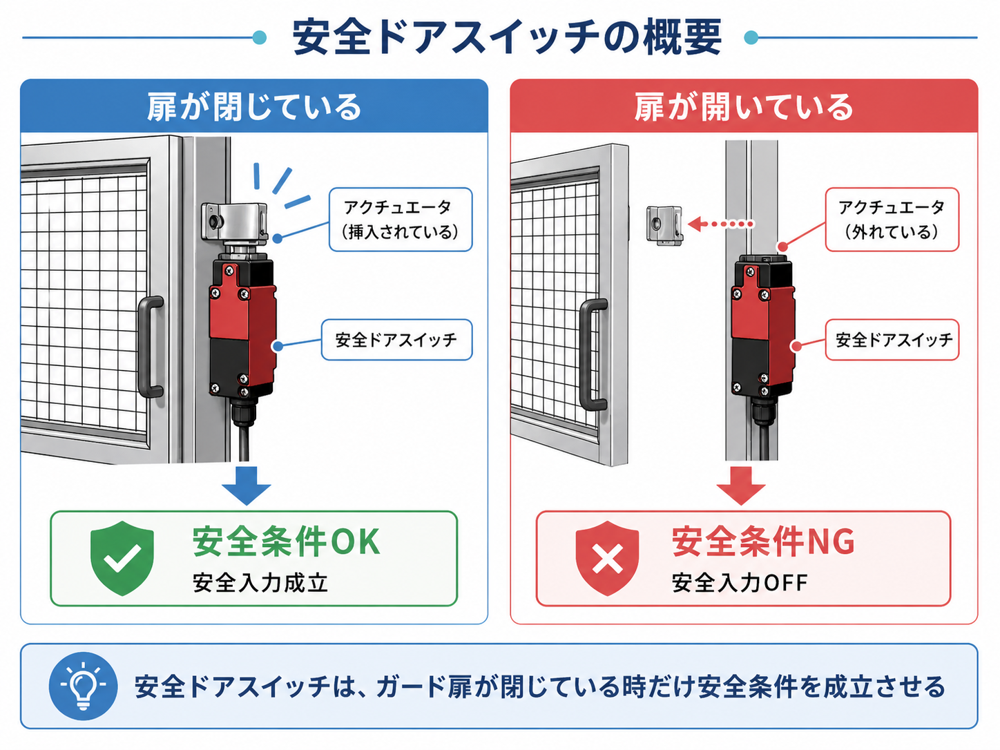
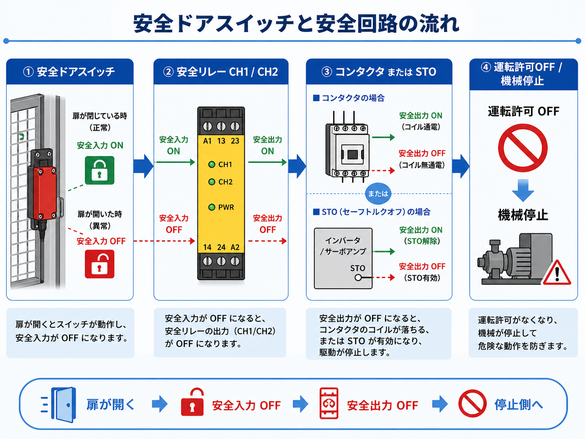
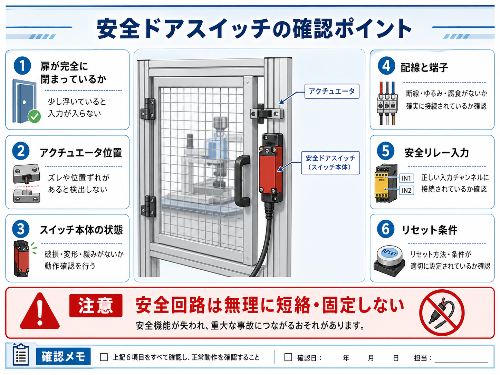

向いている人
- 安全ドアスイッチの役割を知りたい人
- ガード扉が開くと機械が止まる仕組みを整理したい人
- 安全リレーが復帰しない時の確認先を知りたい人
安全ドアスイッチは、ガード扉や安全柵の開閉状態を監視し、扉が開いた時に安全回路を落とすための安全入力機器です。 安全リレーとのつながり、通常のスイッチとの違い、復帰しない時の確認ポイントを整理します。
安全ドアスイッチは、安全柵やガード扉が閉まっているかを確認し、 扉が開いた時に安全回路を崩して機械を停止側へ倒すための安全入力機器です。
ただの扉開閉確認ではなく、人が危険エリアに入る可能性がある時に、運転してよい条件を落とすために使います。 安全リレーや安全コントローラの入力側につながり、コンタクタやSTO、運転許可回路を落とす流れにつながります。
ガード扉が閉じていて、スイッチが正しく動作している時だけ安全条件が成立します。 扉が開いた、スイッチが入っていない、配線が切れているなどの場合は、安全回路が成立しない方向で考えます。

先輩安全ドアスイッチは、ガード扉が閉まっている安全条件を見る部品だね。

新人普通のドア開閉センサーとは違って、安全回路に入る部品なんですね。

先輩そう。扉が開いたら、運転許可を落として危険側へ行かないようにするイメージだよ。
安全ドアスイッチとは、安全柵やガード扉の開閉状態を監視するための安全用スイッチです。 機械の可動部や危険エリアに人が入る可能性がある場所で、扉が開いた時に安全回路をOFF側へ倒すために使います。
使い方としては、扉側のアクチュエータやキーがスイッチ本体に入っている時だけ安全条件が成立し、 扉が開いてアクチュエータが外れると安全入力が崩れる、という見方をします。

安全柵やカバーの扉が閉じているかを確認します。
安全リレーや安全コントローラの入力側につながります。
扉が開いた時に安全条件が崩れ、運転許可を落とす流れになります。
アクチュエータ位置や取付ズレで、安全入力が成立しないことがあります。
見た目では扉が閉まっていても、スイッチが正しく入っていない、アクチュエータがずれている、片側接点が戻っていないなどで安全回路が成立しないことがあります。
扉の開閉を見るだけなら、普通のリミットスイッチや近接センサーでも検出自体はできます。 ただし、安全用途では、単に「開いた・閉じた」をPLCへ知らせるだけではなく、人が危険エリアへ入る可能性を見て、運転許可を落とす必要があります。
そのため、安全ドアスイッチは安全入力機器として、安全リレーや安全コントローラへつなげて使うのが基本になります。 通常の検出用スイッチとは、目的と扱いが違います。
| 部品 | 主な目的 | 使い方のイメージ |
|---|---|---|
| 普通のリミットスイッチ | 位置や動作の検出 | PLC入力で位置確認や工程確認に使うことが多いです。 |
| 近接センサー | 非接触で物体検出 | ワーク検出、位置確認、動作確認などに使います。 |
| 安全ドアスイッチ | ガード扉の安全条件を監視 | 安全リレーへ入力し、扉が開いた時に運転許可を落とします。 |
安全ドアスイッチは、扉が開いたことを知らせるだけでなく、安全回路の条件として扱います。 そのため、通常のセンサーやスイッチとは分けて考えます。
安全ドアスイッチは、安全リレーや安全コントローラの入力側につながります。 扉が閉じていて安全入力が成立している時だけ、安全リレーが安全出力を許可し、コンタクタやSTO、運転許可回路へつながります。
扉が開くと、安全ドアスイッチの入力が崩れ、安全リレーの安全出力がOFFになります。 その結果、コンタクタやSTOが落ち、機械が停止側へ倒れる流れになります。

アクチュエータが正しく入っており、安全入力が成立している状態です。
CH1/CH2などの入力が正常か、安全リレー側で確認します。
条件が成立している時だけ、コンタクタやSTO側へ運転許可を出します。
安全入力が崩れると、安全出力がOFFになり停止側へ倒れます。
扉を閉めて安全入力が戻っても、そのまま機械が動き出すと危険です。 安全確認、リセット、起動操作を分けて考えることが大切です。
安全ドアスイッチが入っていない状態では、安全リレーの入力条件が成立しません。 扉を閉めてスイッチが正常に入ると、安全入力は戻りますが、それだけで機械を自動再起動させない考え方が重要です。
多くの設備では、扉を閉めた後に安全確認を行い、リセット操作をしてから、別の起動操作で運転を再開する流れになります。 これは非常停止の復帰と同じく、解除や復帰だけで勝手に動き出さないようにするためです。
| 状態 | 安全入力 | 考え方 |
|---|---|---|
| 扉が閉じている | 成立 | 安全条件のひとつが成立している状態です。 |
| 扉が開いている | 不成立 | 人が危険エリアへ入る可能性があるため、停止側へ倒します。 |
| 扉を閉め直した | 入力は戻る | 安全確認後、リセットや起動操作を分けて行います。 |
ガード扉を閉めた瞬間に機械が動き出すと危険です。 安全入力の復帰、リセット、起動操作は分けて考えます。
安全リレーが復帰しない時や、設備が運転準備にならない時は、安全ドアスイッチまわりが原因になっていることがあります。 扉の状態、アクチュエータ位置、スイッチ本体、配線、安全リレー入力を順番に確認します。

見た目では閉じていても、少し浮いていてスイッチが入っていないことがあります。
キーやアクチュエータがずれていると、安全入力が成立しないことがあります。
破損、摩耗、接点不良、ロック不良がないか確認します。
断線、端子ゆるみ、配線外れ、片側異常がないか確認します。
CH1/CH2が両方とも正常に入っているか確認します。
安全入力が戻っても、リセットやEDM条件が成立していないと復帰しません。

新人安全リレーが戻らない時、非常停止ばかり見てしまいそうです。
先輩非常停止だけじゃなく、安全ドアスイッチやライトカーテンも安全入力だからね。扉が入っていないだけで復帰しないこともあるよ。
安全ドアスイッチは安全に関わる部品なので、通常の検出スイッチと同じ感覚で扱わない方がよいです。 復帰しないからといって、スイッチを無理に固定したり、入力を短絡したり、バイパスしたりするのは危険です。
扉が開いていても運転できるようにする、スイッチをテープで固定する、入力をジャンパーするなどの対応は非常に危険です。 安全回路に異常がある場合は、原因を確認し、設備仕様と手順に従って対応します。
| やってはいけない見方 | 理由 |
|---|---|
| 扉スイッチを固定する | 扉が開いていても安全入力が成立したように見えてしまいます。 |
| 安全入力を短絡する | 安全機能を無効化する危険があります。 |
| 普通のセンサーで代用する | 安全用途として必要な構造や監視が足りない場合があります。 |
| 復帰だけを急ぐ | なぜ復帰しないのか、危険が残っていないかを確認する必要があります。 |
安全ドアスイッチの実際の選定・配線・改造・安全カテゴリの判断は、設備仕様、リスクアセスメント、適用規格、メーカー資料に従ってください。 この記事では、現場で見た時に理解しやすい基本の考え方に絞っています。
安全ドアスイッチは、ガード扉や安全柵の開閉状態を監視し、扉が開いた時に安全回路を落とすための安全入力機器です。 人が危険エリアに入る可能性がある時に、運転許可を落として機械を停止側へ倒す役割があります。
普通のリミットスイッチや近接センサーは検出用、安全ドアスイッチは安全入力用として考えると分かりやすいです。 安全リレーや安全コントローラと組み合わせて、CH1/CH2、リセット、EDMなどの条件と一緒に見ます。
復帰しない時は、扉の閉まり、アクチュエータ位置、スイッチ本体、配線、安全リレー入力、リセット条件を順番に確認します。 安全に関わる部品なので、不用意なバイパスや短絡は避け、設備仕様と手順に従って対応します。